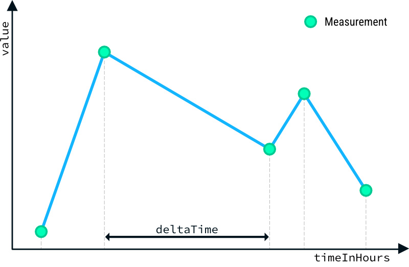

In dieser Aufgabe wirst du lernen, wie man mit einer while-Schleife über eine unbekannte Anzahl an Werten iterieren kann.
In dieser Aufgabe ist eine Messreihe des Luftdrucks gegeben. Die Messungen wurden in zeitlich unregelmäßigen Abständen
durchgeführt. Jeder Messwert wird zusammen mit der aufgezeichneten Zeit in Form von Attributen in einer Instanz der Klasse
Measurement gespeichert. Auf die verfügbaren Messwerte kann über Klassenmethoden der
Recorder-Klasse zugegriffen werden.
Finde nun in dieser Messreihe die beiden Messungen, die den größten zeitlichen Abstand (deltaTime in der
Abbildung) haben. Gib die Differenz und die
beiden Messwerte aus. Das Ergebnis könnte wie folgt aussehen:
Zeitdifferenz: 65 Stunden